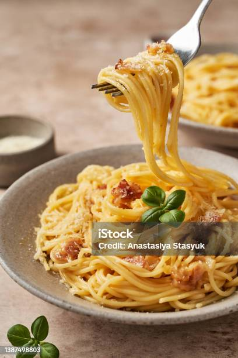

Spaghetti Carbonara

Description
Spaghetti Carbonara is a classic Roman pasta dish made with simple, high-quality ingredients. Creamy without using cream, the sauce is created from eggs, Pecorino Romano cheese, pancetta (or guanciale), and freshly ground black pepper. It's rich, savory, and deeply satisfying—perfect for a quick yet luxurious meal.
Ingredients
- 200g (7 oz) spaghetti
- 100g (3.5 oz) pancetta or guanciale, diced
- 2 large egg yolks + 1 whole egg
- 50g (1.75 oz) Pecorino Romano cheese, finely grated
- Freshly ground black pepper, to taste
- Salt, for pasta water
Instructions
- Boil the pasta
- Bring a large pot of salted water to a boil.
- Cook the spaghetti until al dente (firm to the bite), according to package instructions.
- Reserve about 1 cup of pasta water before draining.
- Prepare the sauce
- In a bowl, whisk together the egg yolks, whole egg, grated Pecorino Romano, and a generous amount of black pepper until smooth and creamy. Set aside.
- Cook the pancetta or guanciale
- In a large skillet over medium heat, cook the pancetta or guanciale until it becomes crispy and golden brown. This takes about 5–7 minutes.
- Remove from heat once cooked but leave the rendered fat in the pan.
- Combine pasta and sauce
- Add the drained hot spaghetti to the skillet with the pancetta. Toss well to combine and let it cool just slightly (about 30 seconds off the heat).
- Pour the egg-cheese mixture over the pasta while tossing quickly to prevent scrambling the eggs. Add a bit of the reserved pasta water, a tablespoon at a time, to loosen the sauce and make it glossy and smooth.
- Serve
- Plate immediately and top with extra Pecorino Romano and freshly cracked black pepper.